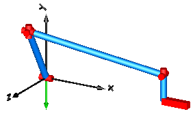

Fourbar1One kinematic loop with four bars (with only revolute joints; 5 non-linear equations) |
|
Diagram
{kind=link}
Information
This information is part of the Modelica Standard Library maintained by the Modelica Association.
This is a simple kinematic loop consisting of 6 revolute joints, 1 prismatic joint and 4 bars that is often used as basic constructing unit in mechanisms. This example demonstrates that usually no particular knowledge of the user is needed to handle kinematic loops. Just connect the joints and bodies together according to the real system. In particular no cut-joints or a spanning tree has to be determined. In this case, the initial condition of the angular velocity of revolute joint j1 is set to 300 deg/s in order to drive this loop.
Outputs (4)
| j1_phi |
Type: Angle (rad) Description: angle of revolute joint j1 |
|---|---|
| j2_s |
Type: Position (m) Description: distance of prismatic joint j2 |
| j1_w |
Type: AngularVelocity (rad/s) Description: axis speed of revolute joint j1 |
| j2_v |
Type: Velocity (m/s) Description: axis velocity of prismatic joint j2 |
Components (12)
| world |
Type: World |
|
|---|---|---|
| j1 |
Type: Revolute |
|
| j2 |
Type: Prismatic |
|
| b1 |
Type: BodyCylinder |
|
| b2 |
Type: BodyCylinder |
|
| b3 |
Type: BodyCylinder |
|
| rev |
Type: Revolute |
|
| rev1 |
Type: Revolute |
|
| j3 |
Type: Revolute |
|
| j4 |
Type: Revolute |
|
| j5 |
Type: Revolute |
|
| b0 |
Type: FixedTranslation |